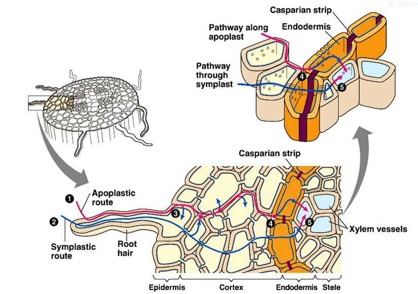
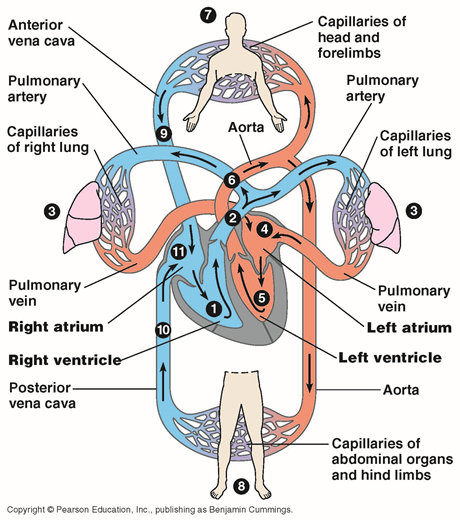
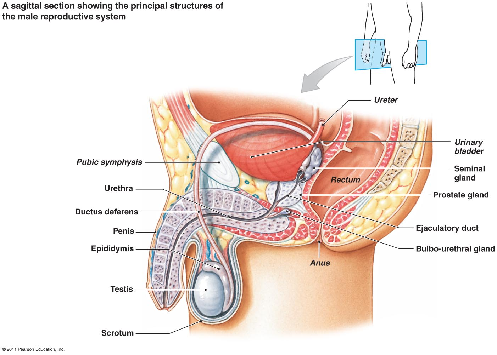

Cellular Respiration
- Catabolic pathways
- Fermentation/ Cellular Respiration
- ATP
- Redox Reactions
- Oxidation/ Reduction
- Glycolysis, Krebs Cycle, Electron Transport Chain
- Mitochondria
- Oxidative Phosphorylation
- Chemiosmosis
- Lactic Acid
Panoramic View of the Cell
- Eukaryotic/ Prokaryotic
- Nucleus, cytoplasm, nucleoid,
- Cell Size
- 10-100 µm
- Plasma membrane
- Selective barrier
- Nucleus
- Double membrane
- Membranes fused at pores
- DNA in chromatin
- Nucleolus
- Ribosomal RNA made here
- Ribosomes
- Protein synthesis
- Free ribosomes make enzymes
- Attached to Endoplasmic reticulum make proteins
- Endomembrane System
- Endoplasmic Reticulum
- Makes membranes, biosynthesis
- Cisternae
- Smooth
- Makes lipids to steroids
- Breaks down carbs
- Detoxifies poisons
- Rough
- Makes proteins and membranes
- Golgi apparatus
- Center of manufacturing, warehousing, sorting, shipping
- Cis Face (receiving) / Trans Face (shipping)
- Lysosomes
- Digestive compartment
- pH 5 environment only
- Phagocytosis/ Autophagy
- Vacuole
- Hydrolysis of macromolecules
- Pumping out excess water
- Endoplasmic Reticulum
- Mitochondria
- Cellular respiration
- Made by ribosomes
- Amount correlates with activity level
- Peroxisomes make peroxide
- Chloroplasts
- Site of photosynthesis
- Cytoskeleton
- Organize structure and cell activity
- Microtubules/ microfilaments/ intermediate Filaments
- Tight, Desmosomes, and Gap Junctions
- Epithelial, connective, nervous, and muscle tissue
- Cuboidal, Columnar, and Squamous cell shape
- Glandular epithelia
- Connective Tissue
- Loose, Adipose, Fibrous, Cartilage, Bone, Blood
- Skeletal, Cardiac, and Smooth Muscle
Transport Systems
- Passive/ Active Transport
- Cotransport - couples passive with active transport
- Osmosis - passive transport of water
- Hypo - under
- Hyper - over
- H2O potential
- Combination of pressure and concentration
- Tonoplast
- Plasmodesmata
- Gap junction in plants
- Connects cytosol of neighboring cells
- Symplast, apoplast
- Phloem, Xylem
- Casparian Strip

- Pull
- Transpiration, cohesion, adhesion, tension
- Bulk flow
- Plants use 0 ATP moving water to leaves
- Stoma Guard Cells
- Source, Sink
- Gastrovascular cavity
- 3 common structures
- Fluid, tubes, muscular pump
- Arteries, arterioles, capillaries, venules, veins
- Systemic circulation/ Pulmonary circulation


- 4 chambers prevents mixing
- Systole - contraction
- Diastole - relaxation
- Aneurysm
- Arteries have higher pressure than veins
- Diameter changed with smooth muscle contractions
- Capillaries do not have muscle layer
- Parts of blood
- Plasma, red blood cell, white blood cell, platelets
- Cardiovascular issues
Cell Cycle
- Somatic cell - 46 chromosomes - Diploid 2n
- Gametes - 23 chromosomes - Haploid n
- Chromatin - DNA protein complex
- Cytokinesis
- Division of cytoplasm
- Karyotype - matching chromosomes in a cell
- M Phase
- Mitosis
- Prophase, Metaphase, Anaphase, Telophase
- Interphase
- G1 - Growth
- S Phase - DNA Replication
- G2 - Growth and Preparation for mitosis
- Prophase
- Mitotic spindle forms in cytoplasm
- Centrosome replicated and copies move to opposite ends of the cell
- Kinetichore - at centromere between sister chromatids
- Metaphase
- Centromeres line up on plane between 2 poles
- Anaphase
- Sister chromatids begin to separate
- Cytokinesis begins
- Telophase
- Chromosomes expand, nuclear envelope reforms, membrane completely divides cell into 2
- Cancer - escapes cell cycle controls
- G1 restriction point
- Cell cycle clock
- Internal/ External cues
- DNA Polymerase - enzyme catalyst
- 5' phosphate -> 3- hydroxyl
- Leading/ Lagging Strands
- DNA ligase - joins Okazaki fragments of lagging strand
- Primer
- RNA
- Joins RNA nucleotide to make primer which is later replaced with DNA
- Helicase - untwists double helix
- Topoisomerase - relaxes coil so helicase can work
- Mismatch repair - carried out by DNA polymerase, fixes mistakes during replication
- Excision repair - repair to existing DNA
- Telomere
- 5' end is impossible to complete
- Telomere at end does not contain genes, but repeating sequence of 'TTAGGG'
- Telomerase - catalyzes lengthening of telomeres
Meiosis
- Sperm produced in Testes
- Ovum produced in Ovaries
- Fertilization - joining of sperm and egg
- Occurs in fallopian tube
- Results in zygote
- Homologue
- Pair of chromosomes similar in size and shape from mother and father
- Tetrad - pairs of chromosomes, carry genes that control same traits
- Has 4 chromatids - telomeres are regenerated
- Locus - position of a gene - in same position on homologues
- Autosome - 22 pairs - does not determine gender
- XX= female, XY = male
- Spermatogenesis
- Primary spermatocyte - diploid cell = 46
- Secondary spermatocyte - n = 23
- Splits into 2 haploid cells
- N = 23, chromatid counts as 1 chromosome
- Oogenesis
- Primary oocyte
- Secondary oocyte - egg
- Polar body - dies
- One egg produced only, 400 primary at birth
- Primary oocyte
- Interphase I
- Chromosomes duplicate - 2 sister chromatids attached at centromere
- Prophase I
- Synapsis - homologous chromosomes form a tetrad
- Crossing over - segments of non-sister chromatids break and reattach to other chromatid
- Chiasmata - site of crossing over
- Metaphase I
- Independent Assortment
- Tetrads align on metaphase plate
- Anaphase I
- Homologous chromosomes separate and move towards poles
- Sister chromatids remain attached
- Telophase I
- Split into two secondary spermatocytes
- Prophase, metaphase, anaphase, telophase II are same as in mitosis
- Nondisjunction
- Failure of homologous pairs, or sister chromatids, to separate during meiosis
- Monosomy - Missing a chromosome
- Trisomy - extra chromosome
- Amniocentesis - procedure to detect genetic disorders, DNA taken from Amniotic fluid or placenta (CVS method)
- Seminiferous tubes
- Highly coiled tubes where sperm forms in scrotum
- Epididymis
- Sperm moves here from seminiferous tubes and matures
- Vas deferens
- Connected to epididymis and join to ejaculatory duct
- Seminal vesicle
- 60% volume of sperm
- Mucus, sugar, Vitamin C, prostaglandins
- Prostate gland
- Anticoagulant and nutrients
- Bulbourethral glands
- Mucus that neutralizes acid urine remaining in the urethra
- Carries sperm
- Tissues of penis fill with blood during arousal
- Endometrium - inner lining of the uterus
- Cervix - neck of the uterus, opening to the vagina
- 4 phases of human sexual response
- Excitement
- Plateau
- Orgasm
- Emission and Ejaculation in males
- Resolution
- Androgen - male hormones
- Pregnancy lasts 40 weeks from LMP (Last Menstrual period)
- Birth control pill - body thinks it is already pregnant, does not release egg
- Vasectomy - cutting vas deferens
- Tubal ligation - cutting fallopian tubes
- Intrauterine device - irritant implanted into uterus, zygote not able to implant
- Morning after pill - short dose of strong hormones that forces menstruation
 Source